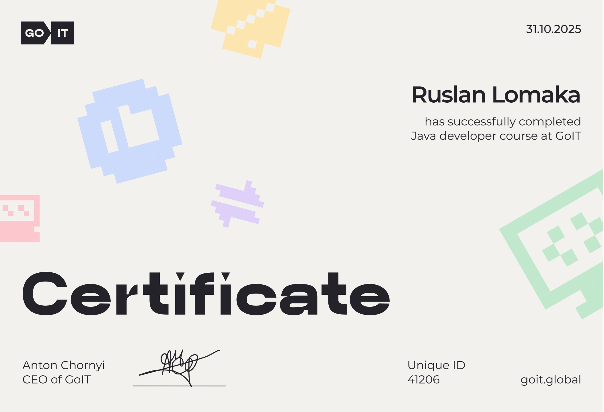

Smart enough to learn fast. Disciplined enough to finish.
I’m Ruslan Lomaka, a software developer, homelab enthusiast, and lifelong learner who enjoys building tools that actually work and solve real problems.
I’ve officially completed the GoIT Java Developer course — 30 modules, 120+ hours of hands-on coding, and two full team projects. Along the way, I worked extensively with Java Core, Spring Boot, Hibernate, REST API development, and CI/CD workflows.
But the certificate is just a checkpoint. What really matters is what I’ve already built — and what I’m actively building right now.
- A fast, scalable Link Shortener microservice
- A Telegram bot delivering real-time currency updates
- A self-hosted DevOps environment on Raspberry Pi — including this very site you’re visiting right now
I’m currently working on my CS50x final web project — a platform that allows anyone to create any quiz they can imagine in seconds. My next focus is consolidating all these services on my Raspberry Pi and exposing them publicly, so they’re not just screenshots or promises — they’re live systems you can actually touch, test, and use.
I’m not the developer with the longest work history — but I am the one who puts in the work, learns aggressively, experiments constantly, and finishes what he starts.
Beyond technical skills, I take communication and integration seriously. To improve my German, I’ve completed three months of language school, invested 200+ hours in private 1-on-1 lessons, and logged 1,000+ hours on Duolingo. I’m disciplined, consistent, and fully committed to growing as both an engineer and a professional in an international environment.
Достатньо розумний, щоб швидко вчитися. Достатньо дисциплінований, щоб доводити справи до кінця.
Я Руслан Ломака — розробник програмного забезпечення, прихильник homelab-підходу та людина, яка постійно навчається. Мені подобається створювати інструменти, які реально працюють і вирішують практичні задачі.
Я офіційно завершив курс GoIT Java Developer — 30 модулів, понад 120 годин практичного кодування та два повноцінні командні проєкти. У процесі я активно працював із Java Core, Spring Boot, Hibernate, розробкою REST API та CI/CD.
Але сертифікат — це лише контрольна точка. Насправді важливіше те, що я вже створив — і що зараз активно розробляю.
- Швидкий і масштабований мікросервіс скорочення посилань
- Telegram-бот з оновленнями валют у реальному часі
- Self-hosted DevOps-середовище на Raspberry Pi — включно з цим сайтом, на якому ви зараз знаходитесь
Зараз я працюю над фінальним вебпроєктом CS50x — платформою, яка дозволяє створювати будь-які квізи або тести за секунди. Мій наступний чєлєндж — буде зібрати всі ці сервіси під одним дахом на Raspberry Pi та відкрити доступ до них, щоб це були не скріншоти чи обіцянки, а живі системи, які можна пощюпать, протестувать й реально використать.
Я не розробник із найбільшим стажем — але я той, хто вкладається, швидко вчиться, постійно експериментує та доводить справи до кінця.
Окрім технічних навичок, я серйозно ставлюся до комунікації та інтеграції. Щоб покращити німецьку, я пройшов три місяці мовної школи, інвестував 200+ годин у приватні 1-на-1 онлайн-уроки та набрав 1 000+ годин у Duolingo. Я дисциплінований, послідовний і повністю налаштований рости як інженер і як професіонал у міжнародному середовищі.
Klug genug, um schnell zu lernen. Diszipliniert genug, um Dinge zu Ende zu bringen.
Ich bin Ruslan Lomaka — Softwareentwickler, Homelab-Enthusiast und lebenslanger Lerner. Ich baue gern Tools, die wirklich funktionieren und echte Probleme lösen.
Ich habe den GoIT Java Developer-Kurs offiziell abgeschlossen — 30 Module, 120+ Stunden praxisnahes Coding und zwei vollständige Teamprojekte. Dabei habe ich intensiv mit Java Core, Spring Boot, Hibernate, REST-API-Entwicklung und CI/CD-Workflows gearbeitet.
Aber das Zertifikat ist nur ein Meilenstein. Entscheidend ist, was ich bereits gebaut habe — und woran ich gerade aktiv arbeite.
- Einen schnellen, skalierbaren Link-Shortener-Microservice
- Einen Telegram-Bot mit Echtzeit-Währungsupdates
- Eine vollständig automatisierte, self-hosted DevOps-Umgebung auf Raspberry Pi — einschließlich dieser Website, auf der Sie gerade sind
Aktuell arbeite ich an meinem CS50x Final-Webprojekt — einer Plattform, mit der man beliebige Quizze in Sekunden erstellen kann. Als Nächstes will ich all diese Services auf meinem Raspberry Pi bündeln und öffentlich zugänglich machen, damit es nicht nur Screenshots oder Versprechen sind, sondern Live-Systeme, die man wirklich anfassen, testen und nutzen kann.
Ich bin nicht der Entwickler mit der längsten Berufserfahrung — aber ich bin der, der konsequent arbeitet, schnell lernt, ständig experimentiert und Dinge zuverlässig zu Ende bringt.
Neben den technischen Skills nehme ich Kommunikation und Integration ernst. Um mein Deutsch zu verbessern, habe ich drei Monate Sprachschule gemacht, 200+ Stunden private 1-zu-1 Online-Unterrichtsstunden investiert und 1.000+ Stunden auf Duolingo absolviert. Ich bin diszipliniert, konstant dran und voll motiviert, mich sowohl als Engineer als auch als Profi im internationalen Umfeld weiterzuentwickeln.

About the Certificate
Про сертифікат
Über das Zertifikat
- 30 modules (Java Core + Java Developer)
- 2 team projects
- 120+ hours of practical work
- 30 модулів (Java Core + Java Developer)
- 2 командні проєкти
- 120+ годин практичної роботи
- 30 Module (Java Core + Java Developer)
- 2 Teamprojekte
- 120+ Stunden praktische Arbeit
Issued: 31 October 2025
Certificate ID: 41206
Issuer: GoIT Global — goit.global
Видано: 31 жовтня 2025
ID сертифіката: 41206
Видавець: GoIT Global — goit.global
Ausgestellt: 31. Oktober 2025
Zertifikat-ID: 41206
Aussteller: GoIT Global — goit.global
Find me on GitHub and LinkedIn.